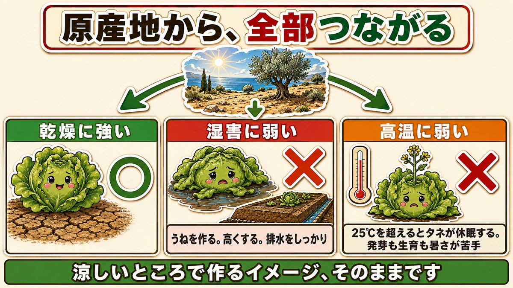
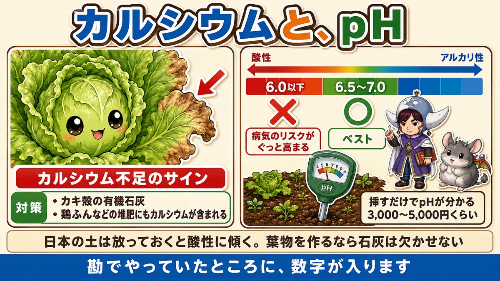
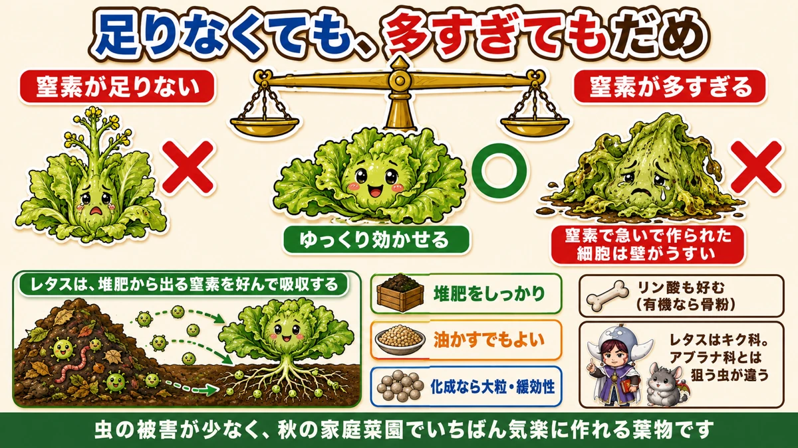

Lettuce is a Mediterranean plant 🥬 Remember that and every problem explains itself

🥬 "The leaf tips are going brown."
🥬 "It collapsed halfway, as if it were melting."
🥬 "It runs to flower almost immediately."
Hello, I'm Eiko. Eight years of growing vegetables organically and without pesticides, and a teaching licence in science.
Lettuce suits a home garden — few pests, quick to grow. And it trips you up in unexpected places.
The headline:
Lettuce is a Mediterranean plant.
Hold onto that and almost everything else follows from it.

What this diagram says （図解の文字）
- It all follows from where it comes from
- ○ "tolerates dry" ／ ✗ "suffers in damp"
- "Build a ridge. Make it high. Get the drainage right"
- ✗ "doesn't like heat" — "above 25 °C the seed goes dormant. Germination and growth both dislike heat"
- "You picture it being grown somewhere cool — that's exactly right"
Start from where it comes from
What the Mediterranean is like
Dry summers with little rain. Wet winters, but not severely cold. That's the climate this plant was shaped by.
Tolerant of dry, intolerant of damp
So: lettuce copes well with dryness and badly with waterlogging.
Damp conditions, poor drainage, long spells of rain, water sitting in the soil — all of these bring on disease and disorders.
Which is why you raise the bed
The remedy is simple. Build a ridge, and make it a high one. On a badly drained plot, more so — and sort the drainage out as well.
Lettuce is one of the crops where a high ridge shows its value most clearly.
It dislikes heat too
The other consequence of its origins. You picture lettuce being grown somewhere cool, and that's right — it doesn't take heat.
And in heat it initiates flower buds: it bolts.
Above 25 °C (77 °F), lettuce seed goes dormant and won't germinate. The same applies to growth, not just germination.
So respect the sowing window — for an autumn crop, wait until the worst heat has passed.
It likes calcium

What this diagram says （図解の文字）
- Calcium, and pH
- "The sign of calcium deficiency" → "remedy: oyster-shell organic lime; poultry manure and other composts also contain calcium"
- acid ← → alkaline ／ ✗ "below 6.0 — disease risk rises sharply" ／ ○ "6.5–7.0 — best"
- "Push it in and it reads the pH" — a soil pH meter
Brown leaf tips are the sign
Short of calcium, lettuce burns at the leaf tips — the very ends turn brown and go crisp. That's a calcium deficiency signal.
Lime supplies it
Use a lime high in calcium — oyster-shell organic lime works well here. Leafy crops want calcium; worth remembering as a general rule.
Compost carries it too
Composts contain calcium, and poultry manure is particularly high in it. Mixing some into the base fertiliser is a good idea.
pH 6.5–7.0
Lettuce has a clear target: 6.5 to 7.0 is best.
And a clear boundary: below pH 6.0, the disease risk rises sharply.
Rainy climates drift acid
Where rainfall is high — Japan very much included — soil left alone drifts toward acid, which means it slides under 6.0 on its own.
Spinach and lettuce both dislike acidity. If you grow leafy crops, lime is not optional.
There's a tool for this
"How am I supposed to know the pH?" A soil pH meter. Push it into the soil and it reads out — around 3,000–5,000 yen (roughly £15–25 / $20–35).
One is enough to give you a sense of the whole plot. It's a tool for measuring something you can't see — where you were working on instinct, you now have a number.
Nitrogen: release it slowly

What this diagram says （図解の文字）
- Too little is wrong and too much is wrong
- ✗ "not enough nitrogen" ／ ○ "release it slowly" ／ ✗ "too much nitrogen"
- "Cells built in a hurry on nitrogen have thin walls"
- "Lettuce preferentially takes up the nitrogen released by compost"
- "Plenty of compost / rapeseed meal is fine / if using a compound, large-granule slow-release"
- "It likes phosphorus too"
Too little and it flowers
Short of nitrogen, lettuce initiates flower buds. Bolting again — heat causes it, and so does underfeeding.
Without the capacity to grow, the plant switches to "time to set seed".
Too much and it melts
So feed it heavily? No — the opposite. Too much nitrogen brings pests and disease, and lettuce has a signature one: bacterial soft rot.
The plant dissolves, exactly as the name suggests. It's a miserable thing to watch.
As with everything else: cells built in a hurry on nitrogen have thin walls, and thin walls let pathogens in.
So: release it slowly
Not too little, not too much. The answer is slow release.
And here's the interesting part: lettuce preferentially takes up the nitrogen that comes out of compost. Nitrogen comes in several forms, and this is the one it favours.
So:
- Plenty of compost
- Rapeseed meal also works
- If you use a compound fertiliser, large-granule slow-release
Put it in a form that comes out gradually. That's what suits lettuce.
It likes phosphorus too
Phosphorus is a building block of DNA and strengthens cell membranes — so for an organic source, bone meal. Which makes sense as soft-rot prevention as well.
Why lettuce suits a home garden
It has few pests
Lettuce is naturally little troubled by insects, and in cold weather there are fewer fungal pathogens about too. In the long war over caterpillars, the casualties are cabbage and Chinese cabbage — lettuce sits that one out.
Because it isn't a brassica
Lettuce is in the daisy family.
Cabbage, Chinese cabbage, broccoli, radish, komatsuna — all brassicas, all hunted by the same insects. Lettuce is the odd one out.
Different family, different situation — the same principle that drives companion planting.
So it's a good one to start with
Few pest worries, and quick. I think it's the most relaxed leafy crop in an autumn garden.
Get the soil right and the rest is waiting — and getting the soil right is everything above.
To sum up
- ✅ Lettuce is a Mediterranean plant. Everything follows from that
- ✅ Tolerates dry, suffers in damp
- ✅ Build a high ridge and sort the drainage
- ✅ Dislikes heat, and bolts in it. Above 25 °C the seed goes dormant
- ✅ Brown leaf tips = calcium deficiency. Oyster-shell lime, or poultry-manure compost
- ✅ pH 6.5–7.0. Below 6.0 the disease risk climbs
- ✅ Rainy climates drift acid, so lime is not optional for leafy crops
- ✅ A pH meter measures what you can't see
- ✅ Too little nitrogen → bolting. Too much → soft rot. Release it slowly
- ✅ Lettuce prefers nitrogen from compost; it likes phosphorus too
- ✅ Not a brassica, so different pests — and far fewer of them
You don't have to do all of it. Just build the bed a little higher than usual. Remember it's a Mediterranean plant and you can work the rest out yourself 🥬
Thank you for reading!